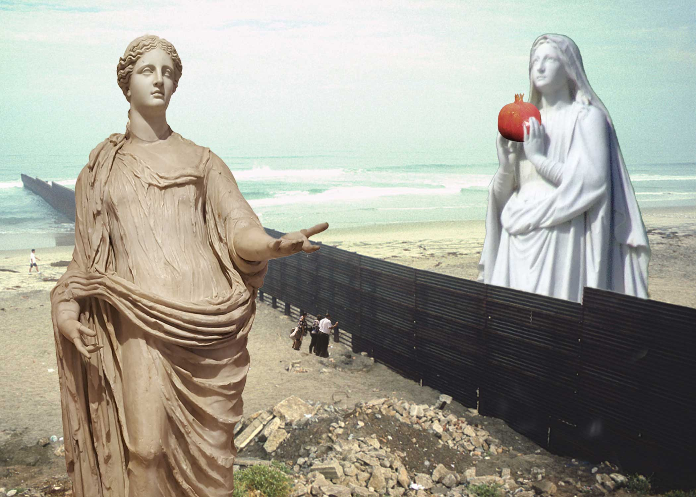
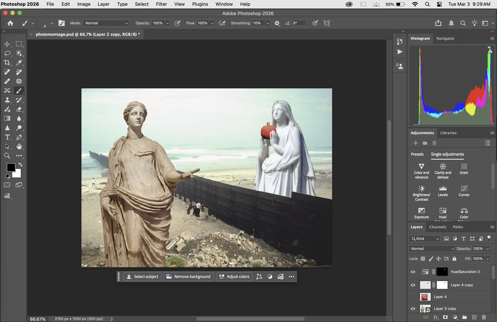

I used objects from Wikimedia pictures to depict a contemporary issue: family separation at the U.S. border. The photograph I used for the background was dreary and desaturated. The border is heavy and dark, drawing the eye diagonally across the landscape and reaching far into the sea from the shore. The only adjustment to the background is increasing the saturation, introducing more color above the border. This was necessary after deciding on the white and beige statues for my objects. From the class lecture, I noted that lighter objects would need to take up more space within the frame. I changed the Demeter to a smart object as I would frequently change the size and shift the statue’s position until I was satisfied with both characteristics. Using the Crop tool, I wanted to construct a composition using the diagonal border. This was the most time-consuming, as I was unsure, and I would like to practice more.
Apart from the image with the U.S border I used for the background, I used the Photoshop "Object Selection” tool and the inverted selection option to mask components for my subjects. I used blending modes with the clipping masks to darken the shadows on the Virgin Mary (satin) and create an outer glow outline surrounding both statues. The most changes I made to a mask are to the Mary statue’s front hand and the globus criciger. I zoomed in to add to the pomegranate object mask and added an adjustment panel to desaturate the vibrant colors of the original photograph.
I chose Persephone and Demeter as mythological figures to explore scale and proportion. I drew from the Greek myth to universalize the issue of family separation, while adding elements that would localize the story at the U.S. border. To emphasize the open sky with an enclosed triangular space for my composition, I used a mask on a photograph of a family peeking through the U.S. border. As a result, the sense of scale between humans and the statues communicated how powerful boundaries are.
{kind=link}
{kind=link}
{kind=link}